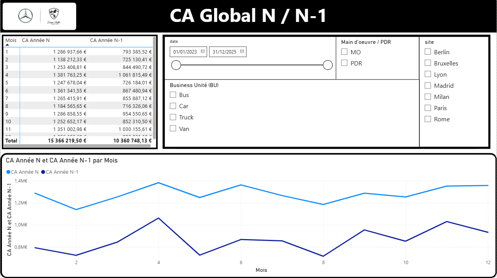
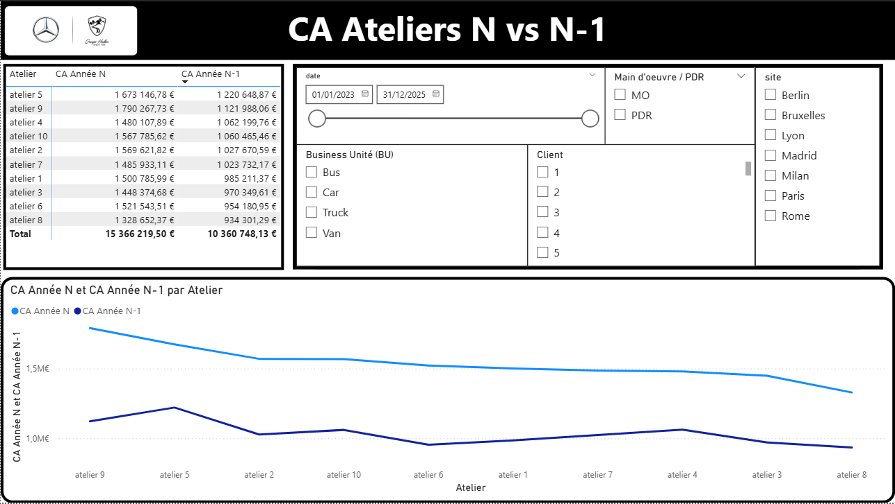
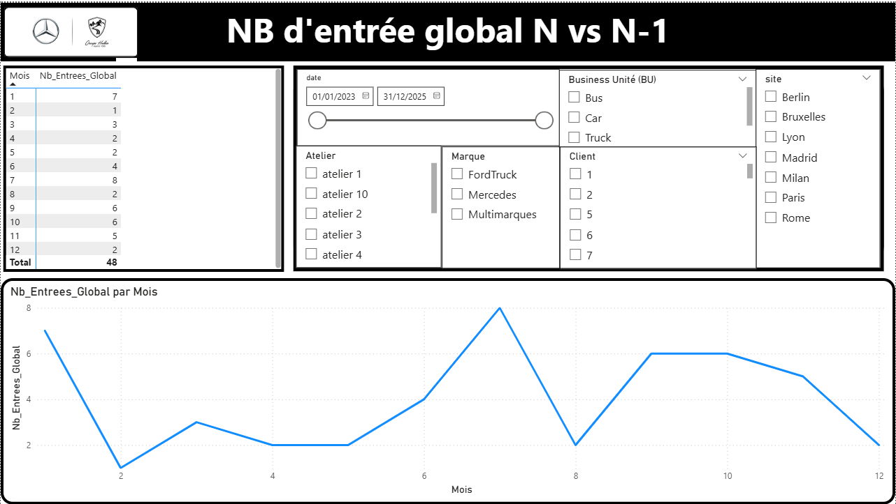

Présentation du projet
Ce projet a pour objectif la mise en place d’un rapport Power BI destiné aux directeurs après-vente Mercedes. Il remplace un pilotage basé sur des fichiers Excel issus d’extractions manuelles du DMS (Autoline), jugé trop chronophage.
L’objectif est d’automatiser la collecte, la transformation et la visualisation des données afin d’améliorer la rapidité d’analyse et la prise de décision sur l’ensemble des 12 sites.
Pour des raisons de confidentialité, les captures d’écran présentées ont été réalisées à partir de données de test et ne contiennent aucune donnée réelle de l’entreprise.
Architecture et flux de données
- Extraction automatique nocturne des données du DMS
- Transformation et nettoyage des données avec Power Query
- Modélisation des tables et relations dans Power BI
- Mise à jour automatique du rapport à partir de la source
Indicateurs et visuels développés
- Chiffre d’affaires global, atelier et magasin (N vs N-1)
- Productivité et improductivité atelier
- Taux de facturation
- Marge pièces et CA par code CPV
- Encours heures atelier et encours pièces
- Filtres dynamiques : site, période, Business Unit, marque, client
Captures d'écran



Ce que j'ai appris
Ce projet m’a permis d’approfondir la modélisation de données orientée décisionnel, la création d’indicateurs métier pertinents et la conception de dashboards professionnels adaptés à des utilisateurs managers. J’ai également développé une vision plus stratégique de la data, centrée sur l’aide à la décision.